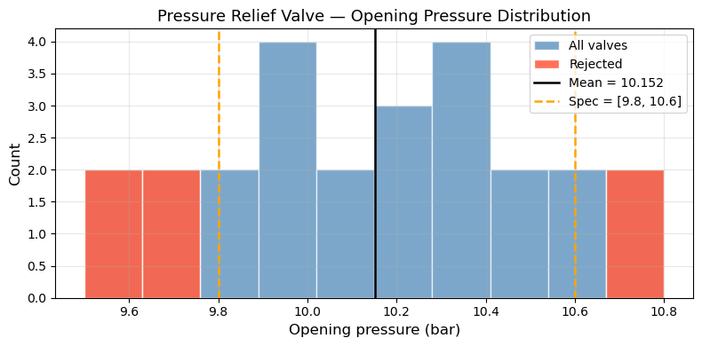
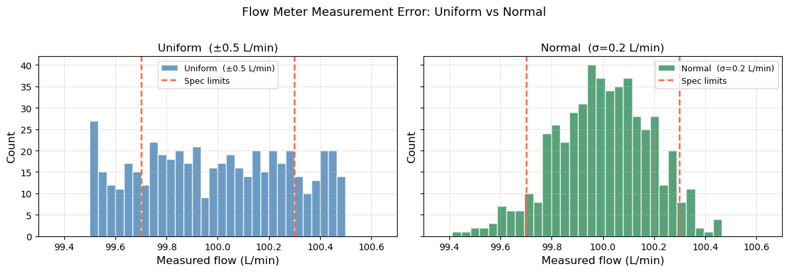

Lab 08: Statistics & Random Sampling#
Examples (by instructor)#
In this lab, you’ll apply the statistics tools from Chapter 13 to real engineering data: summarizing datasets with descriptive statistics, working with probability distributions (uniform and normal), computing probabilities using the CDF and PPF, and building confidence intervals for the mean.
Example 1: Descriptive Statistics#
Given 10 batch yields (%): 82.1, 85.4, 79.8, 83.7, 86.2, 81.0, 84.5, 80.3, 85.9, 82.8
Compute mean, median, sample std, and the fraction below 81%.
import numpy as np
import matplotlib.pyplot as plt
from scipy import stats
yields = np.array([82.1, 85.4, 79.8, 83.7, 86.2, 81.0, 84.5, 80.3, 85.9, 82.8])
print(f"Mean : {np.mean(yields):.2f} %")
print(f"Median : {np.median(yields):.2f} %")
print(f"Std : {np.std(yields, ddof=1):.2f} % (sample, ddof=1)")
print(f"Below 81% : {np.sum(yields < 81)} / {len(yields)} batches")
Mean : 83.17 %
Median : 83.25 %
Std : 2.34 % (sample, ddof=1)
Below 81% : 2 / 10 batches
Example 2: Normal Distribution — CDF and PPF#
Reactor temperature follows \(\mathcal{N}(\mu=350\text{ K},\; \sigma=5\text{ K})\).
What fraction of the time is temperature below 343 K?
What temperature is exceeded only 5% of the time?
dist_T = stats.norm(loc=350, scale=5)
# 1. P(T < 343)
print(f"P(T < 343 K) = {dist_T.cdf(343):.4f}")
# 2. Temperature exceeded only 5% of the time → 95th percentile
print(f"T exceeded 5% of the time = {dist_T.ppf(0.95):.2f} K")
P(T < 343 K) = 0.0808
T exceeded 5% of the time = 358.22 K
Example 3: Confidence Interval for the Mean#
Five repeat measurements of outlet concentration (mol/L): 2.31, 2.28, 2.35, 2.29, 2.33
Compute the 95% confidence interval using the \(t\)-distribution.
C = np.array([2.31, 2.28, 2.35, 2.29, 2.33])
n = len(C)
xbar = np.mean(C)
se = np.std(C, ddof=1) / np.sqrt(n)
lo, hi = stats.t.interval(0.95, df=n-1, loc=xbar, scale=se)
print(f"Mean = {xbar:.4f} mol/L")
print(f"95% CI: [{lo:.4f}, {hi:.4f}] mol/L (width = {hi-lo:.4f})")
Mean = 2.3120 mol/L
95% CI: [2.2764, 2.3476] mol/L (width = 0.0711)
Warm-Up: Syntax Practice#
Short exercises to get comfortable with the key statistics functions before the main problems.
Exercise 1 — Descriptive statistics.
Given the following 8 reactor conversion measurements (%), compute the mean, median, sample standard deviation, and IQR. Then print whether the mean and median are close (within 1%).
78.2, 81.5, 76.9, 83.1, 79.4, 80.7, 77.8, 82.3
import numpy as np
X = np.array([78.2, 81.5, 76.9, 83.1, 79.4, 80.7, 77.8, 82.3])
mean = ___ # mean
median = ___ # median
std = ___ # sample std dev (ddof=1)
iqr = ___ - ___ # Q3 - Q1 (use np.percentile)
print(f"Mean = {mean:.2f} %")
print(f"Median = {median:.2f} %")
print(f"Std = {std:.2f} %")
print(f"IQR = {iqr:.2f} %")
if abs(mean - median) < 1.0:
print("Mean and median are close — distribution is roughly symmetric.")
else:
print("Mean and median differ — distribution may be skewed.")
---------------------------------------------------------------------------
TypeError Traceback (most recent call last)
Cell In[4], line 8
6 median = ___ # median
7 std = ___ # sample std dev (ddof=1)
----> 8 iqr = ___ - ___ # Q3 - Q1 (use np.percentile)
10 print(f"Mean = {mean:.2f} %")
11 print(f"Median = {median:.2f} %")
TypeError: unsupported operand type(s) for -: 'str' and 'str'
Exercise 2 — Random sampling with a seed.
Generate 1000 samples from a Normal distribution with mean 350 K and standard deviation 15 K using np.random.default_rng(seed=7). Then:
Print the sample mean and sample standard deviation
Print what fraction of samples exceed 375 K
import numpy as np
rng = np.random.default_rng(seed=___) # use seed=7
samples = rng.normal(___, ___, ___) # loc=350, scale=15, size=1000
print(f"Sample mean : {np.mean(samples):.2f} K")
print(f"Sample std : {np.std(samples, ddof=1):.2f} K")
frac_above = ___ # fraction of samples > 375
print(f"Fraction > 375 K : {frac_above:.4f}")
Exercise 3 — CDF and PPF.
Flow rate through a valve follows a Normal distribution \(\mathcal{N}(\mu=50,\, \sigma=4)\) L/min.
Use scipy.stats.norm to answer:
What fraction of the time is flow rate below 45 L/min? (
cdf)What flow rate is exceeded 90% of the time? (
ppf)
from scipy import stats
dist_flow = stats.norm(loc=___, scale=___) # mu=50, sigma=4
# 1. P(flow < 45)
p_below_45 = ___ # use .cdf()
print(f"P(flow < 45 L/min) = {p_below_45:.4f}")
# 2. Flow rate exceeded 90% of the time → 10th percentile
flow_p10 = ___ # use .ppf(0.10)
print(f"Flow exceeded 90% of the time = {flow_p10:.2f} L/min")
Practice Problems (by students)#
Problem 1: Pressure Relief Valve — Distribution Analysis#
A safety engineer tests 25 pressure relief valves. The opening pressure (bar) for each valve is recorded:
# |
Pressure (bar) |
|---|---|
1–5 |
10.2, 9.8, 10.5, 10.1, 9.6 |
6–10 |
10.4, 9.9, 10.3, 10.7, 9.7 |
11–15 |
10.0, 10.6, 9.5, 10.2, 10.4 |
16–20 |
10.8, 9.9, 10.1, 10.3, 9.8 |
21–25 |
10.5, 10.0, 9.7, 10.6, 10.2 |
Valves are rejected if the opening pressure falls outside [9.8, 10.6] bar.
(a) Compute mean, median, std (sample), min, max, and IQR. Print all values.
(b) How many valves are rejected? What is the rejection rate (%)? Print the values of the rejected valves.
(c) Assume the opening pressure follows a Normal distribution with the sample mean and std you computed. Using scipy.stats.norm, compute the theoretical probability that a valve falls outside [9.8, 10.6] bar. Compare to the observed rejection rate.
(d) Plot a histogram of the data with:
A vertical line at the mean
Vertical dashed lines at the spec limits (9.8 and 10.6 bar)
import numpy as np
import matplotlib.pyplot as plt
from scipy import stats
P = np.array([10.2, 9.8, 10.5, 10.1, 9.6,
10.4, 9.9, 10.3, 10.7, 9.7,
10.0, 10.6, 9.5, 10.2, 10.4,
10.8, 9.9, 10.1, 10.3, 9.8,
10.5, 10.0, 9.7, 10.6, 10.2])
lo_spec, hi_spec = 9.8, 10.6
# ── (a) Descriptive statistics ────────────────────────────────────────────────
mean_P = np.mean(P)
std_P = np.std(P, ddof=1)
q1, q3 = np.percentile(P, 25), np.percentile(P, 75)
print("(a) Descriptive Statistics")
print(f" Mean : {mean_P:.4f} bar")
print(f" Median : {np.median(P):.4f} bar")
print(f" Std : {std_P:.4f} bar (sample, ddof=1)")
print(f" Min : {np.min(P):.2f} bar")
print(f" Max : {np.max(P):.2f} bar")
print(f" IQR : {q3 - q1:.4f} bar (Q1={q1:.2f}, Q3={q3:.2f})")
# ── (b) Rejection analysis ────────────────────────────────────────────────────
rejected = P[(P < lo_spec) | (P > hi_spec)]
print(f"\n(b) Rejection Analysis")
print(f" Rejected valves : {len(rejected)} / {len(P)} ({100*len(rejected)/len(P):.1f}%)")
print(f" Rejected values : {rejected}")
# ── (c) Theoretical rejection probability ─────────────────────────────────────
dist_P = stats.norm(loc=mean_P, scale=std_P)
p_reject_theory = 1 - (dist_P.cdf(hi_spec) - dist_P.cdf(lo_spec))
# explanation: P(outside spec) = 1 - P(within spec) = 1 - [P(P ≤ hi_spec) - P(P < lo_spec)]
print(f"\n(c) Theoretical vs Observed Rejection Rate")
print(f" Theoretical P(outside spec) = {p_reject_theory:.4f} ({100*p_reject_theory:.2f}%)")
print(f" Observed rejection rate = {len(rejected)/len(P):.4f} ({100*len(rejected)/len(P):.2f}%)")
# ── (d) Histogram plot ────────────────────────────────────────────────────────
fig, ax = plt.subplots(figsize=(8, 4))
# Histogram of all valves
ax.hist(P, bins=10, color='steelblue', edgecolor='white', alpha=0.7, label='All valves')
# Overlay rejected valves in red
ax.hist(rejected, bins=10, color='tomato', edgecolor='white', alpha=0.9, label='Rejected')
ax.axvline(mean_P, color='black', linestyle='-', linewidth=1.8, label=f'Mean = {mean_P:.3f}')
ax.axvline(lo_spec, color='orange', linestyle='--', linewidth=1.8, label=f'Spec = [{lo_spec}, {hi_spec}]')
ax.axvline(hi_spec, color='orange', linestyle='--', linewidth=1.8)
ax.set_xlabel('Opening pressure (bar)', fontsize=12)
ax.set_ylabel('Count', fontsize=12)
ax.set_title('Pressure Relief Valve — Opening Pressure Distribution', fontsize=13)
ax.legend(fontsize=10)
ax.grid(True, alpha=0.3)
plt.tight_layout()
plt.show()
(a) Descriptive Statistics
Mean : 10.1520 bar
Median : 10.2000 bar
Std : 0.3595 bar (sample, ddof=1)
Min : 9.50 bar
Max : 10.80 bar
IQR : 0.5000 bar (Q1=9.90, Q3=10.40)
(b) Rejection Analysis
Rejected valves : 6 / 25 (24.0%)
Rejected values : [ 9.6 10.7 9.7 9.5 10.8 9.7]
(c) Theoretical vs Observed Rejection Rate
Theoretical P(outside spec) = 0.2702 (27.02%)
Observed rejection rate = 0.2400 (24.00%)

Problem 2: Random Sampling and Distribution Analysis#
A flow meter has a known measurement error that follows a Uniform distribution over \([-0.5,\; +0.5]\) L/min. The true flow rate is 100 L/min, so measured values = \(100 + \text{Uniform}(-0.5, 0.5)\).
(a) Using np.random.default_rng(seed=21), generate 500 simulated measurements. Compute the sample mean and sample std. Compare them to the theoretical mean and std of the Uniform distribution.
(b) What fraction of measurements fall outside \([99.7,\; 100.3]\) L/min? Compute it both from the simulated samples and theoretically using scipy.stats.uniform.
(c) Now suppose the flow meter is replaced with a better instrument whose error follows a Normal distribution \(\mathcal{N}(0,\; 0.2^2)\). Using the same seed and 500 samples, what fraction of measurements now fall outside \([99.7,\; 100.3]\) L/min? Again compute both from simulation and from the Normal CDF.
(d) Plot side-by-side histograms of the simulated measurements for both instruments on the same x-axis range. Add vertical lines at 99.7 and 100.3. Which instrument is more likely to give a reading within spec?
import numpy as np
import matplotlib.pyplot as plt
from scipy import stats
true_flow = 100.0
lo_spec, hi_spec = 99.7, 100.3
# ── (a) Uniform instrument: 500 samples ──────────────────────────────────────
rng = np.random.default_rng(seed=21)
errors_unif = rng.uniform(-0.5, 0.5, 500)
meas_unif = true_flow + errors_unif
print("(a) Uniform instrument — sample vs theoretical")
print(f" Sample mean : {np.mean(meas_unif):.4f} L/min (theoretical: {true_flow:.1f})")
print(f" Sample std : {np.std(meas_unif, ddof=1):.4f} L/min (theoretical: {1/np.sqrt(12):.4f})")
# explanation: Uniform(a, b) has mean = (a+b)/2 and std = (b-a)/sqrt(12)
# ── (b) Fraction outside spec — Uniform ──────────────────────────────────────
frac_out_unif_sim = np.mean((meas_unif < lo_spec) | (meas_unif > hi_spec))
# explanation: count how many measurements are outside the spec limits, then divide by total samples
# Theoretical: Uniform(99.5, 100.5), spec is [99.7, 100.3]
dist_unif = stats.uniform(loc=true_flow - 0.5, scale=1.0)
p_in_spec_unif = dist_unif.cdf(hi_spec) - dist_unif.cdf(lo_spec)
p_out_unif_theory = 1 - p_in_spec_unif
print(f"\n(b) Fraction outside [{lo_spec}, {hi_spec}] — Uniform instrument")
print(f" Simulated : {frac_out_unif_sim:.4f} ({100*frac_out_unif_sim:.1f}%)")
print(f" Theoretical: {p_out_unif_theory:.4f} ({100*p_out_unif_theory:.1f}%)")
# ── (c) Normal instrument: same seed, 500 samples ────────────────────────────
rng = np.random.default_rng(seed=21)
errors_norm = rng.normal(0, 0.2, 500)
meas_norm = true_flow + errors_norm
frac_out_norm_sim = np.mean((meas_norm < lo_spec) | (meas_norm > hi_spec))
dist_norm = stats.norm(loc=true_flow, scale=0.2)
p_out_norm_theory = 1 - (dist_norm.cdf(hi_spec) - dist_norm.cdf(lo_spec))
print(f"\n(c) Fraction outside [{lo_spec}, {hi_spec}] — Normal instrument (σ=0.2)")
print(f" Simulated : {frac_out_norm_sim:.4f} ({100*frac_out_norm_sim:.1f}%)")
print(f" Theoretical: {p_out_norm_theory:.4f} ({100*p_out_norm_theory:.1f}%)")
print(f"\n→ Normal instrument has lower out-of-spec rate: "
f"{100*p_out_norm_theory:.1f}% vs {100*p_out_unif_theory:.1f}% (Uniform)")
# ── (d) Side-by-side histograms ───────────────────────────────────────────────
fig, axes = plt.subplots(1, 2, figsize=(12, 4), sharey=True)
x_range = (99.3, 100.7)
for ax, meas, label, color in [
(axes[0], meas_unif, 'Uniform (±0.5 L/min)', 'steelblue'),
(axes[1], meas_norm, 'Normal (σ=0.2 L/min)', 'seagreen'),
]:
ax.hist(meas, bins=30, color=color, edgecolor='white', alpha=0.8, label=label)
ax.axvline(lo_spec, color='tomato', linestyle='--', linewidth=1.8, label='Spec limits')
ax.axvline(hi_spec, color='tomato', linestyle='--', linewidth=1.8)
ax.set_xlim(x_range)
ax.set_xlabel('Measured flow (L/min)', fontsize=12)
ax.set_ylabel('Count', fontsize=12)
ax.set_title(label, fontsize=12)
ax.legend(fontsize=9)
ax.grid(True, alpha=0.3)
plt.suptitle('Flow Meter Measurement Error: Uniform vs Normal', fontsize=13, y=1.02)
plt.tight_layout()
plt.show()
(a) Uniform instrument — sample vs theoretical
Sample mean : 99.9954 L/min (theoretical: 100.0)
Sample std : 0.2876 L/min (theoretical: 0.2887)
(b) Fraction outside [99.7, 100.3] — Uniform instrument
Simulated : 0.3760 (37.6%)
Theoretical: 0.4000 (40.0%)
(c) Fraction outside [99.7, 100.3] — Normal instrument (σ=0.2)
Simulated : 0.1080 (10.8%)
Theoretical: 0.1336 (13.4%)
→ Normal instrument has lower out-of-spec rate: 13.4% vs 40.0% (Uniform)
